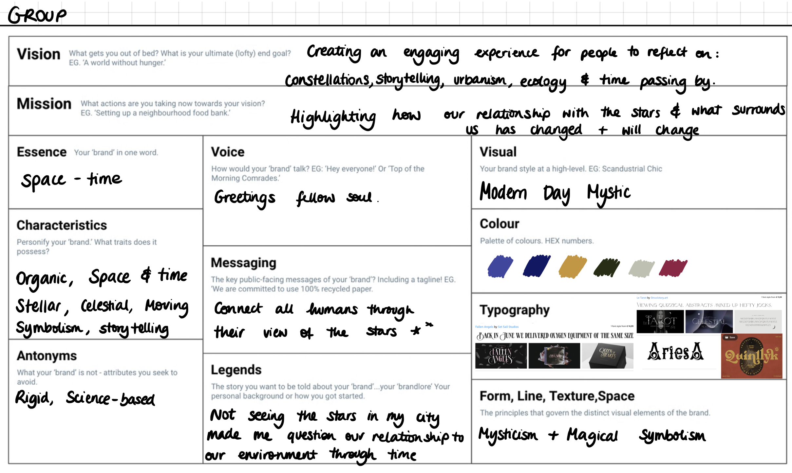
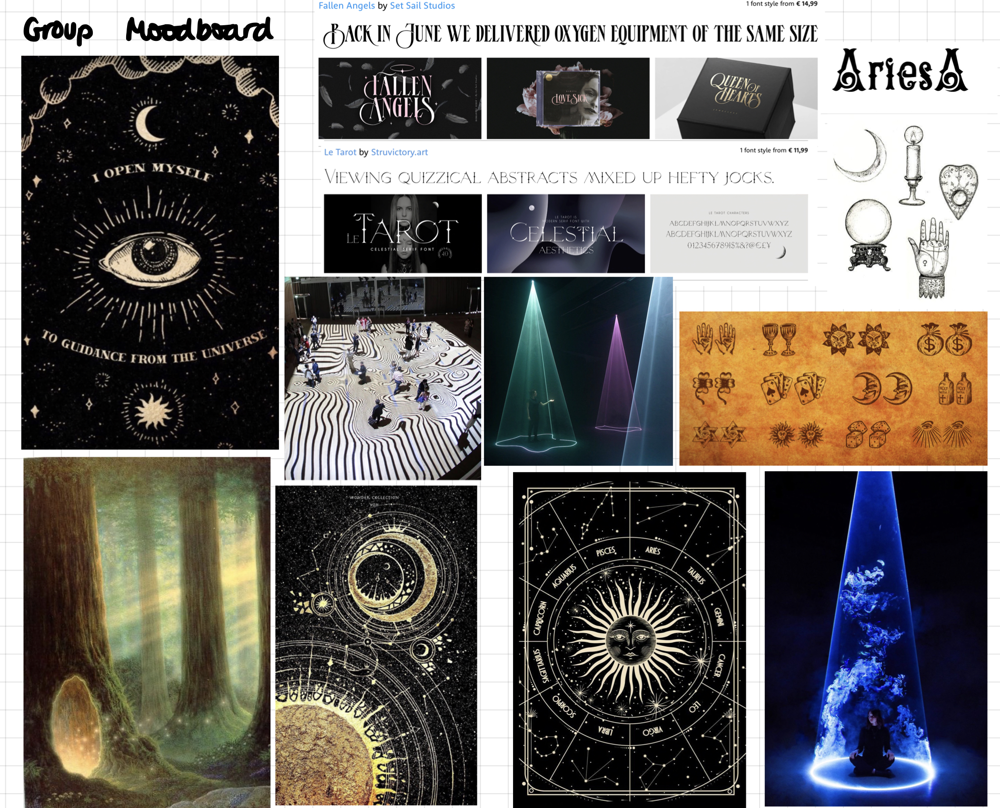

Check out my Miro board for my updated timeline.
I am slowly beginning to see the connections between all the courses, even though they are all very different. I see the professors pushing us to shift our perspective in our assignments, wanting us to use these submissions as a way of working on our design interventions.
I’ve noticed that people around me are managing to do so through the fabacademy challenges: Many students who were focused on biomaterials are including them in their projects, and others interested in furniture design or waste management are also framing their fabacademy work around that too.
However, as of now, I have found it hard to include my Design intervention ideas in my fabacademy weekly + monthly challenges. So far, we’ve focused mainly on laser cutting small objects, which although I’ve had fun working with, it’s kind of irrelevant to my ideas around interactive installations and multimedia projections.
What I have also noticed is that even though I am not fully making the connection between Fabacademy and my Design Interventions (yet), I am definitely there with the branding course. People have struggled defining their brand, visual identity, messaging and mission, but I have very clear ideas. Maybe this is related to my background, which so far has involved more branding and graphic design as opposed to fabrication and woodwork.




The exercise I completed with Chris during Kate's branding lesson on Monday was very helpful in defining key components for our Design Intervention: the target audience and the content. Find a more in-depth summary of the exercise here.
From now on I will try to focus my future assignments and projects around my Design Intervention. I want my projects to be more cohesive and complementary, because as of now, they seem all over the place. I want to be able to add projects to my Miro board, like a string of events and various iterations within the same space.
I will try to work more closely with ideas in alignment with my bigger goal and use the weekly assignments we have as supporting frameworks for my broad vision.